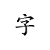
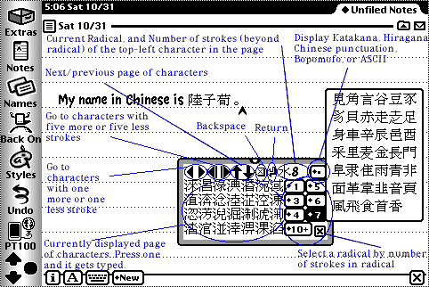

Radicals for the Newton
Radicals is a radical/stroke input system for Chinese, designed especially for non-native speakers and students. Having trouble finding that needle in a haystack of over 10,000 Chinese characters? Radicals can help.
There are many input methods for chinese characters on the Newton. Unfortunately, most of them require you to know the pronounciation of the character. Non-native Chinese speakers don't always have that luxury. Radicals is a fall-back measure designed to let anyone find any Chinese character if they know how to write it. It does this by letting the user browse a radical/stroke database much like he would browse a Chinese dictionary.
Radicals has only been tested on the Newton MessagePad 2000, so I can only guarantee that it works under NOS2.x.
Radical/Stroke Input
Traditional Chinese dictionaries order Chinese characters in the following way. First, characters are grouped by "radical", a special character which appears as a prominent subpart of the character being grouped. Within a radical grouping, characters are ordered by the number of brush strokes, besides the radical part, necessary to draw the character. In case of ties, the more common characters appear earlier.
There are over two hundred radicals, so in a dictionary the radical-lookup table itself is also ordered by the number of strokes necessary to draw the radical. Once you find your radical, you go to its part of the dictionary and look up the character. There are other ways of looking up characters in dictionaries nowadays, but this is still by far the most common.

Using Radicals
Radicals is designed to be used almost exactly like a Chinese radical/stroke lookup dictionary.
- Determine the radical of your character.
- Count the number of strokes in the radical. Pick a menu numbered with that many strokes or less. Up pops a list of all the appropriate radicals. After you have chosen your radical,
- The window fills up with a page of characters assigned to that radical. The characters are ordered by number of strokes beyond the radical, and secondarily by commonness.
- The radical appears in the top-right hand corner of the window, plus a number which indicates the number of strokes (beyond the radical) of the top-left character in the page.
- For any given radical, there are often many more characters than could fit in the window at one time. The arrow buttons are (left to right):
- Scroll to display characters with one fewer stroke.
- Scroll to display characters with one more stroke.
- Scroll to display characters with five fewer strokes.
- Scroll to display characters with five more strokes.
- Scroll back one page.
- Scroll forward one page.
- Type the "delete" key.
- Type the "return" key.
- Once you've found your character, press it to type it.
- Lastly, the "..." menu lets you page through some additional character sets instead of paging through radical groups: Japanese Hiragana and Katakana, Taiwanese Bopomofo, Chinese character punctuation, and ASCII. And, of course, bring up the About Box or hide Radicals.
About Version 1.4
What's New
- Several new radical shapes added to menus, to make looking items up easier.
Bugs
- Still can't type in Newt Works.
- There are some non-Chinese characters (a few minor Hangul syllables, some circled Korean months, etc.) available in UniTaipeiX but which cannot be accessed from Radicals.
Frequently Asked Questions
Why do some of the characters appear as small black squares?
The database source for Radicals is the complete Unicode database. The font Radicals uses (UniTaipeiX), while being the best chinese font available for the Newton, only can display the characters found in the GB and BIG5 encodings. A number of Unicode chinese characters, particularly some new or uncommon simplified chinese character variants, are not displayable in UniTaipeiX. I'm too lazy to strip these characters out -- plus, I've found them useful at times. Maybe in the future we'll have a more complete Chinese font I can use instead.
What is Hirigana/Katakana/Bopomofo?
Hirigana and Katakana are alphabets used in Japanese. Hirigana is used to spell out those modern Japanese words for which Chinese characters are traditionally not used. Katakana is used to spell out Japanese words which were originally borrowed from a foreign (western) language, particularly English. Bopomofo is an alphabet used in Taiwan to teach children how to pronounce chinese characters.
Why are There Two Punctuation Groups?
Unicode for some reason divided Chinese punctuation into two distinct, nonadjacent areas. I'm too lazy to write the code to join them together.
Download Radicals
Radicals.1.4.pkg or Radicals.1.4.sit (79K stored in Newton)
Important Note. Radicals requires UniTaipeiX, a chinese font available for the Newton (in the Newton it appears with the name "Taipei"). There are two versions of UniTaipeiX available. The standard version (see next section below) is designed for native speakers and uses a special hack to replace the system font so Newton menus and buttons can be customized into Chinese. Unfortunately, it also breaks some apps, most significantly, Newton Works. For non-native speakers, a better option is to use my version of UniTaipeiX which appears as an ordinary Newton font and doesn't attempt to replace any other fonts. Sean's Special UniTaipeiX.pkg or UniTaipeiX.sit (602K stored in Newton).
Free Source Code. Software developers can now download the source code to Radicals.
Where Do I Find Chinese/Japanese Fonts and other input systems and dictionaries?
Some links to get you started:
-
Joseph Chen's Chinese Newton Page. Joseph Chen has coded quite a few impressive input systems and dictionaries for the Newton, and also lists all known Chinese fonts for the Newton. You may be particularly interested in Uni24Lite, a font which cuts down the number of chinese characters dramatically but displays them in big, beautiful 18-point size. Also note that the version of UniTaipeiX on Joseph's web page is the standard version which for non-natives is in general a bad choice -- use my version listed above instead.
- Eureka's Lily Input Pad. Another input system which lets you input from a Newton Keyboard as well. Cool! But I don't speak Mandarin, so this isn't as useful to me tho.
- The Hong Kong Newton Users's Group. One of the more with-it user's groups out there. Very impressive home page, including a lot of information on how to convert your Newton for Chinese. Yes, it's in English. Hong Kong ain't Taiwan, y'know...
- Tomoyoshi Murai lists a wide range of Japanese fonts, and six different Japanese input systems.
- Enfour Group Japan sold a number of input systems, dictionaries, and fonts for Japanese. While at the Newton Shop in Tokyo, I personally used Enfour's Japanese character handwriting recognition system. It works! Very nifty indeed.